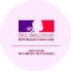
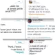

Frieze
Throughout history, feminism
has been able to develop greatly.
The movement has allowed women to
to make themselves heard in the whole world
and to obtain numerous rights.
Discover a timeline
with some important dates of
feminism.
XVIII
Olympe de Gouges first feminist
1748-1793
XIX
“La Fronde” the first feminist daily newspaper in the world
XX

Marie Curie 1903 and 1911 Nobel Prize
Maternity leave 1909
French right to vote 1944
“Le deuxième sexe” Simeone de Beauvoir May 1, 1949
Legalization of contraception December 28, 1967
Françoise Giroud : first Secretary of State for Women's Affairs
Law against sexual abuse at work November 2, 1992
XXI

Equal pay : elimination of pay gaps between women and men March 23, 2006

Creation of the Ministry of Women's Rights in its own right June 21, 2012
Emma Watson's speech at the United Nations headquarters September 20, 2014

#BalanceTonPorc October 13, 2017
Free contraception for children under 15 August 27, 2020